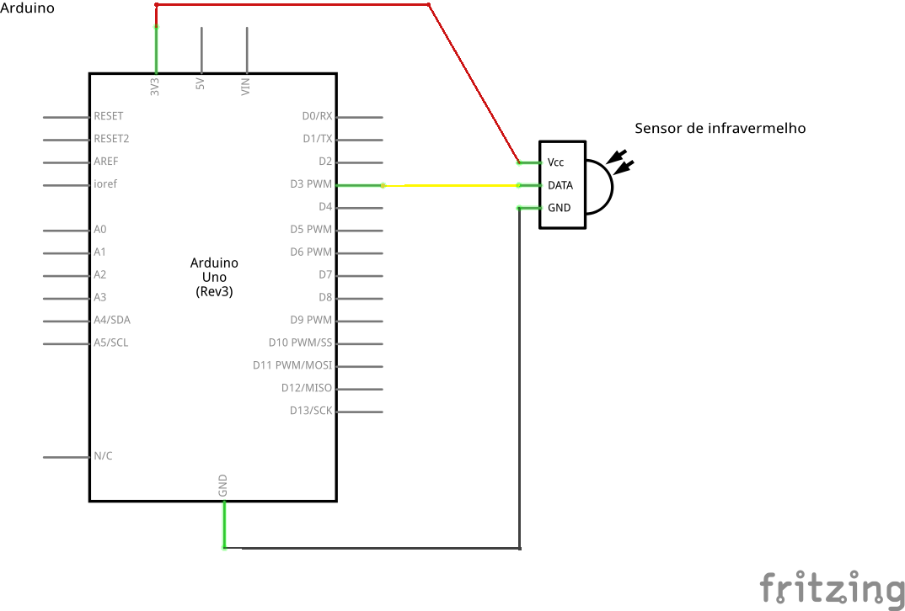

Sobre o Átila
- Graduando em Ciência da Computação pelo IFCE Campus Maracanaú.
- 8 anos de experiência com Linux.
- Organizador do COMSOLiD a 6 anos.
- Aficcionado por JavaScript.
Sobre o Samir
- Graduando em Ciência da Computação pelo IFCE Campus Maracanaú.
- Organizador do COMSOLiD a 6 anos.
- Programador desde menino (1900 e não interessa...).
- Gosta de estudar novas tecnologias.
Introdução
Um dos objetivos da tecnologia é prover Automatização.
Anatomia
Arduino Starter Kit

USD 39,00 ou R$ 100,70
Outros componentes
- Wi-Fi e Ethernet
- Sensores de Força, Luz, Temperatura, Presença, Proximidade, Toque, Pressão
- Led
- Botões
- EEPROM
- GSM
- Piezo
- LCD
- RFID
JavaScript
JavaScript
Criado em 1995 por Brendan Eich, na NetScape.
Originalmente foi criado para dar vida as páginas web.
Em 2009 nasceu o NodeJS, uma forma de executar JavaScript fora do browser.
NodeJS
Criado por Ryan Dahl, é uma ambiente de execução multi-plataforma, de código aberto para aplicativos JavaScript no lado do servidor.
Instalação
$ sudo apt-get install nodejs
Instala o node (ambiente de execução) e o npm (instalador de módulos)
Cylon.js
Cylon.js é uma framework javascript para robôs, física computacional, e Internet das Coisas.
Plataformas suportadas:
- Arduino
- Beaglebone
- Intel Edison
- Leap Motion
- OpenCV
- Raspberry Pi
- Tessel, entre outras.
Cylon.js - Exemplo
Antes de começar, é necessário instalar a firmata padrão:
- Baixe o Arduino IDE
- Plugue seu Arduino na USB
- Abra o Arduino IDE, selecione no menu:
Arquivo → Examples → Firmata → Standard Firmata - Clique no botão
Upload
Cylon.js - Exemplo
Website
Instalação
$ mkdir project $ cd project $ npm init $ npm install cylon cylon-firmata --save $ node index.js
Cylon.js - Exemplo
var Cylon = require("cylon");
Cylon.robot({
connections: {
arduino: { adaptor: 'firmata', port: '/dev/ttyUSB0' }
},
devices: {
led: { driver: 'led', pin: 13 }
},
work: function(my) {
every((1).second(), function() {
my.led.toggle();
});
}
}).start();
Johnny-Five
Johnny-Five é uma framework javascript para robôs, Internet das Coisas desenvolvido na Bocoup.
Plataformas suportadas:
- Arduino
- Beaglebone
- Eletric Imp
- Intel Galileo & Edison
- Pinoccio
- Raspberry Pi, entre outras.
Johnny-Five - Exemplo
Antes de começar, é necessário instalar a firmata padrão:
- Baixe o Arduino IDE
- Plugue seu Arduino na USB
- Abra o Arduino IDE, selecione no menu:
Arquivo → Examples → Firmata → Standard Firmata - Clique no botão
Upload
Johnny-Five - Exemplo
Website
https://github.com/rwaldron/johnny-five
Instalação
$ mkdir project $ cd project $ npm init $ npm install johnny-five --save $ node index.js
Johnny-Five - Exemplo
var five = require("johnny-five"),
board, led;
board = new five.Board();
board.on("ready", function() {
// Create a standard `led` hardware instance
led = new five.Led(13);
// "strobe" the led in 100ms on-off phases
led.strobe(100);
});
Johnny-Five - Exemplo

Entretanto...
Cylon.js e Johnny-Five ainda não dão suporte ao receptor infravermelho!
O que fazer para contornar isso?
(Por enquanto...)
Controle Remote Infravermelho
Controle Remote Infravermelho
Para nosso exemplo vamos usar um Controle Remote Infravermelho para controlar o Popcorntime, uma aplicativo que permite assistir Filmes, Séries e Animes através de stream de torrent.
Controle Remote Infravermelho
Como isso é feito?
Precisamos primeiro capturar os dados enviados pelo controle e decodificá-los.
Após decodificação, é necessário enviar para a porta serial qual o comando para aquele botão.
Mapeamento dos botões
Enviando comandos para porta serial
Sketch do projeto
Sketch do projeto

Usando 'serialport' para ler da porta serial
'use strict';
var api = require('./popcorn/api')
, com = require('serialport');
var serialPort = new com.SerialPort('/dev/ttyUSB0', {
baudrate: 9600,
parser: com.parsers.readline('\r\n')
});
serialPort.on('open',function() {
console.log('Port open');
});
Usando 'serialport' para ler da porta serial
serialPort.on('data', function(data) {
function callback(error, response, body) {
if (!error && response.statusCode === 200) {
api.parseAndSend(data);
} else {
console.log(error);
}
}
api.send('ping', [], callback);
});
Fazendo parse dos comandos lidos da serial
if (/^rc4pt:(.*)$/.test(value)) {
/* ... */
this.send('getviewstack', [], function(error, response, data) {
if (!error && response.statusCode === 200) {
/* ... */
switch (currentView) {
case 'main-browser':
self.handleMainBrowser(cmd);
break;
case 'player':
self.handlePlayer(cmd);
break;
/* ... */
}
}
});
}
Fazendo parse dos comandos lidos da serial
Api.prototype.handlePlayer = function(cmd) {
switch (cmd) {
case 'play-pause':
this.send('toggleplaying');
break;
case 'func-stop':
this.send('togglefullscreen');
break;
case 'down':
this.send('back');
break;
}
};
github.com/comsolid/rc4pt-arduino
github.com/comsolid/rc4pt-node
Onde baixar a apresentação?
github.com/comsolid/arduino-javascript-slides
<Obrigado pela atenção!>
Qualquer dúvida entre em contato.